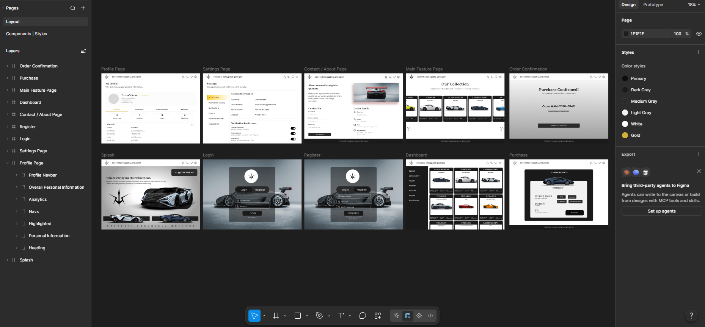
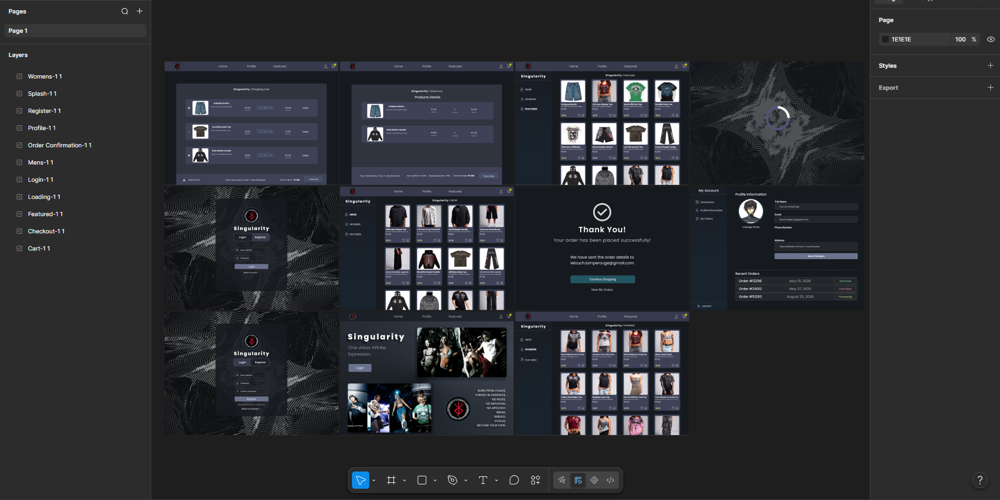
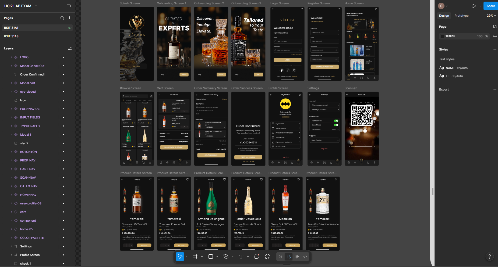

01
Masinag SHS Enrollment Management System
A web-based enrollment platform with application review, entrance exam scoring, enrollment workflows, role-based administration, and an LMS portal.
ASPIRING FRONT-END DEVELOPER/ PHILIPPINES
I'm Charles, a 3rd year BSIT student and aspiring front-end developer focused on building practical systems, thoughtful interfaces, and creative digital work.
01 / SELECTED WORK
A selection of academic and personal projects where design meets functionality.
01
A web-based enrollment platform with application review, entrance exam scoring, enrollment workflows, role-based administration, and an LMS portal.
02
A digital credit expense tracker designed for sari-sari stores to manage customer credit without relying on a notebook.
03
A Python-based system for recording, organizing, and monitoring attendance data with a practical workflow for managing daily records.
04
A Java-based payroll system built to organize employee information, salary calculations, and payroll records through a structured management workflow.
05
A PHP-based management system for organizing construction projects, tracking project information, and keeping operational records in one place.
06
This portfolio — a minimal, responsive space for documenting projects, skills, experiments, and growth as a developer.
02 / ABOUT ME
I enjoy taking an idea that exists only on paper and turning it into something people can actually use.
My work sits between development and design — I care about how a system works behind the screen, but also about how it feels to use.
General Trias, Cavite
National College of Science and Technology
Web Development / UI & UX
Open to internships & projects
03 / 3D & BLENDER
I also enjoy building 3D models in Blender — from shaping simple ideas into finished objects to learning through every iteration.
3D modeling gives me another way to think about design, form, detail, and composition.
What started as a creative side interest has become a way for me to practice patience and problem-solving outside web development. I enjoy modeling objects from scratch, refining their proportions, setting up materials and lighting, and seeing an idea become something tangible.
I'll be using this space to document selected Blender work and show the progression behind the finished models.
04 / UI/UX & WEB DESIGN
A collection of web and interface concepts designed in Figma, focused on layout, usability, visual hierarchy, and responsive experiences.

01 / FIGMA DESIGN01
A Figma-based automotive shopping interface designed with a focus on vehicle discovery, product browsing, purchasing, and user account management.

02 / FIGMA DESIGN02
An e-commerce interface designed for browsing men's and women's fashion, managing a shopping cart, completing checkout, and viewing orders and user profiles.

03 / UI/UX DESIGN03
A mobile shopping interface designed around product discovery, product details, QR scanning, cart management, checkout, and order tracking.
01
An editorial-style character poster inspired by Bleach, combining bold typography, manga panels, character information, and a black, white, and yellow visual system.
05 / TOOLKIT
HTML / CSS / JavaScript / Bootstrap / Tailwind CSS
PHP / MySQL / REST APIs / Authentication / CRUD Systems
Git / GitHub / VS Code / XAMPP / Responsive Design
Vue JS / Laravel / Cybersecurity / Visual Effects in Blender
06 / CONTACT
Whether it's a website, system, collaboration, or just an idea worth exploring, I'd be happy to hear about it.
Get in touch ↗